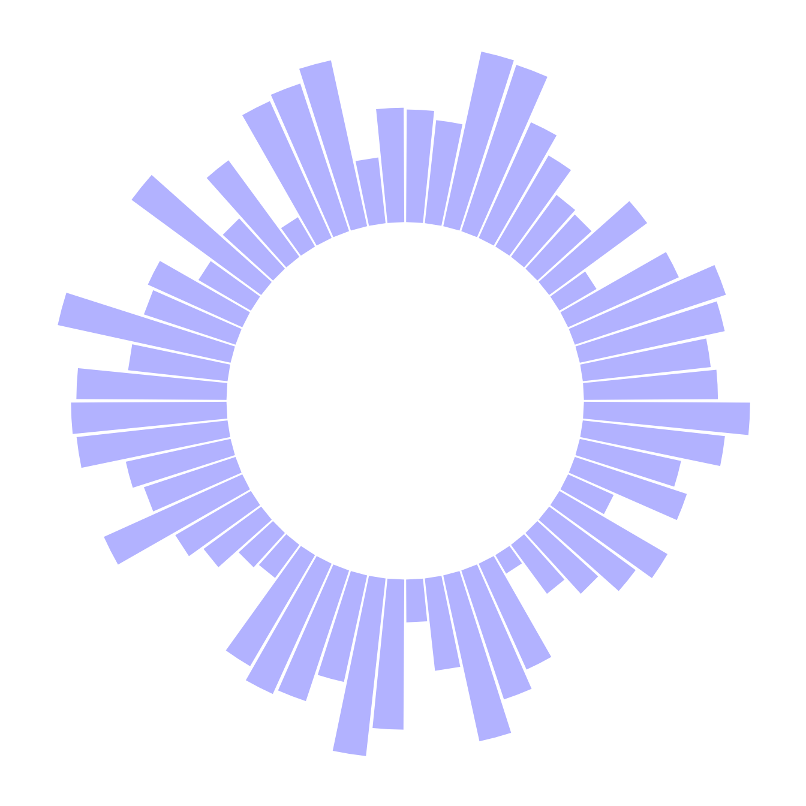

Related chart types

Barplot

Spider / Radar

Wordcloud

Parallel

Lollipop

Circular Barplot
A circular barplot is a barplot where bars are displayed along a circle instead of a line.
The input dataset is the same than for a barplot: we need one numeric value per group (one group = one bar). (See more explanation in the barplot section).
Basically, the method is the same than to do a classic barplot. At the end, we call coord_polar() to make the chart circular. Note that the ylim() argument is really important. If it starts at 0, the bars will start from the centre of the circle. If you provide a negative value, a white circle space will appear!
This chart is not really insightful, go to the next example to learn how to add labels!

# Libraries
library(tidyverse)
# Create dataset
data <- data.frame(
id=seq(1,60),
individual=paste( "Mister ", seq(1,60), sep=""),
value=sample( seq(10,100), 60, replace=T)
)
# Make the plot
p <- ggplot(data, aes(x=as.factor(id), y=value)) + # Note that id is a factor. If x is numeric, there is some space between the first bar
# This add the bars with a blue color
geom_bar(stat="identity", fill=alpha("blue", 0.3)) +
# Limits of the plot = very important. The negative value controls the size of the inner circle, the positive one is useful to add size over each bar
ylim(-100,120) +
# Custom the theme: no axis title and no cartesian grid
theme_minimal() +
theme(
axis.text = element_blank(),
axis.title = element_blank(),
panel.grid = element_blank(),
plot.margin = unit(rep(-2,4), "cm") # This remove unnecessary margin around plot
) +
# This makes the coordinate polar instead of cartesian.
coord_polar(start = 0)
pThis chart is not really insightful, go to the next example to learn how to add labels!
Related chart types